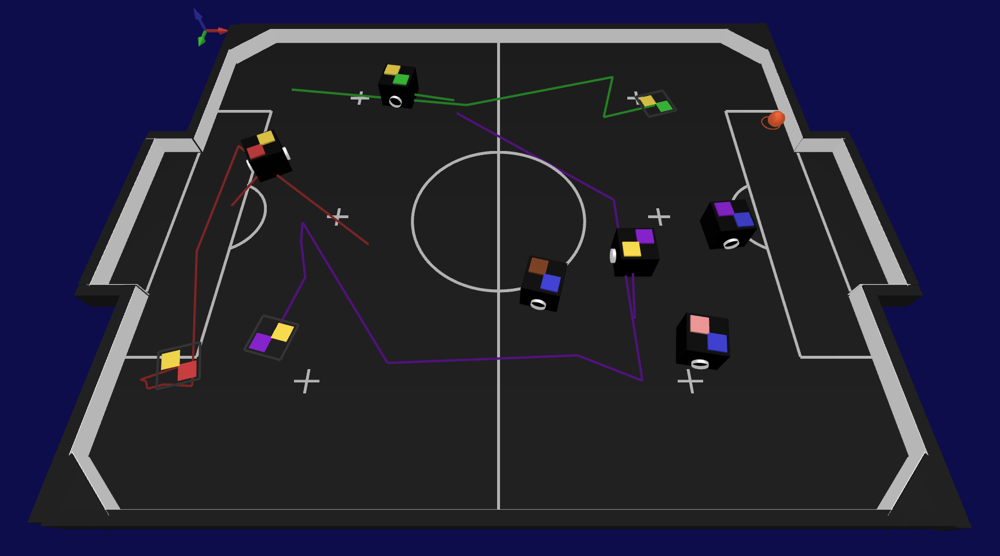
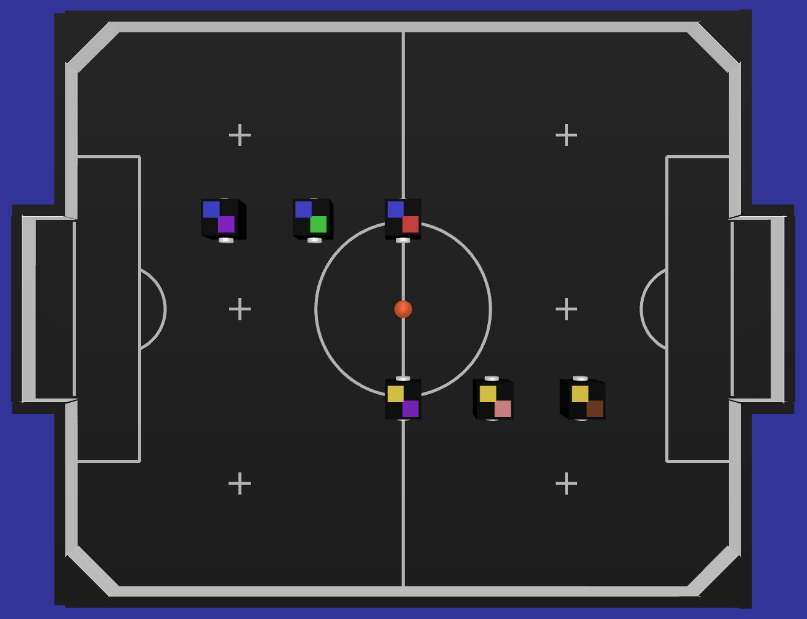
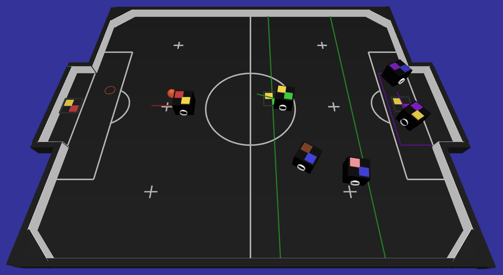

Entenda como funciona a comunicação entre os projetos
Como é realizado a comunicação entre os softwares
O VSS-Viewer é um ambiente de representação 3D feito para a categoria de futebol de robôs IEEE Very Small Size [Soccer] que incorpora os estados dos projetos VSS-Vision e VSS-Simulator. O projeto se inspira nos monitores da RoboCup 2D/3D Soccer Simulation e possibilita o debug visual de poses iniciais, finais e caminhos.
Aqui encontra-se o funcionamento do programa, isto é, como mudar a câmera de visualização, definir o IP de um computador que esteja rodando o VSS-Vision ou VSS-Simulator e habilitar o debug visual.
O VSS-Viewer é configurado para receber estados de qualquer VSS-Vision ou VSS-Simulator em um computador ou na rede. Ele abre um socket e se inscreve na transmissão multicast dos projetos VSS-Vision e VSS-Simulator (porta: 5555). O mesmo obtém as informações dos projetos e desenha em um ambiente 3D a representação dos objetos em campo.
Até o momento existem duas câmeras implementadas no VSS-Viewer, uma de TV e outra do topo do campo a 2 metros de altura. Para definir qualquer câmera utilizar basta entrar com o parâmetro -c e o tipo da camera, tv ou top.
Cada equipe tem a possibilidade de enviar informações de debug para o VSS-Viewer, essas informações são: Pose de final, Vetor de movimento e Caminho. Poses são definidas por uma posição em (x, y) e uma orientação e z e são desenhadas como o topo de um robô no chão. Um vetor de movimento é definido como um posição (x, y) que parte do centro do robô para onde o mesmo deseja ir. Um caminho é definido com uma lista diâmica de pontos, note que os desenvolvedores tem a abertura para desenhar outras coisas além do caminho. Como áreas de atuação e etc. Para ativar o modo debuf basta entrar com o parâmetro -d na execução.
O SDK foi construído com o propósito de ser facil de ser utilizado e executável em diversos computadores. É possível definir o IP de um PC em que o VSS-Vision ou VSS-Simulator esteja rodando na rede, com isso tem-se a possibilidade de balancear carga entre diversos computadores. Para abrir a recepção de dados e um outro computador basta entrar com o parâmetro -i seguido do IP. ex: ./VSS-Viewer -i 192.168.0.100 (padrão localhost ou 127.0.0.1).
Aqui encontra-se alguns aspectos técnicos sobre o funcionamento do visualizador 3D, como, as bibliotecas utilizadas e o motivo de utiliza-las. Para maior entendimento acesse a documentação online.
A glut é uma biblioteca de funcionalidades para OpenGL cujo principal objetivo é a abstração do sistema operacional fazendo com que os aplicativos sejam multiplataforma. A biblioteca possui funcionalidades para criação e controle de janelas, e também tratamento de eventos de dispositivos de entrada (mouse e teclado). Também existem rotinas para o desenho de formas tridimensionais pré-definidas (como cubo, esfera, bule, etc).
O VSS-Viewer recebe os estados de jogo e pacotes de debug via sockets, para isso é utilizado a biblioteca Google Procol Buffers (Protobuf) para serializar e deserializar as mensagens, pois dentre todas as opções existentes a mesma apresenta um dos melhores desempenhos e pode ser utilizada em diversas linguagens. A biblioteca é neutra em linguagem e neutra em plataforma, como XML, porém menor, mais rapido e simples.
Para receber os dados do VSS-Vision e VSS-Simulator o projeto abre uma inscrição em um multicast na porta 5555 e para receber os pacotes de debug, são abertos dois sockets unicast nas portas 5557 e 5558, para isso, é utilizado a biblioteca ZeroMQ. A biblioteca também busca ser neutra em linguagem e plataforma, assim o sistema de visão e todos os outros projetos estão aptos a rodar em múltiplos computadores com SOs diferentes. É possivel desenvolver um módulo de inteligência que se comunique com os projetos do VSS-SDK nas seguintes linguagens: C++, Java, Python, JavaScript, Go, Ruby, Objective-C, C#, Perl, PHP, Scala e Julia.
Como é realizado a comunicação entre os softwares
Quais técnicas e bibliotecas o VSS-Vision utiliza
Quais bibliotecas o VSS-Simulator utiliza
Como o VSS-SampleStrategy pode facilitar o desenvolvimento de um estratégia
Como controlar robôs utilizando qualquer joystick